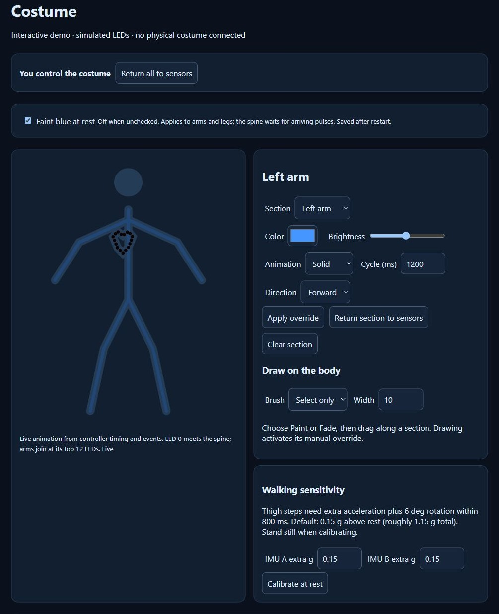
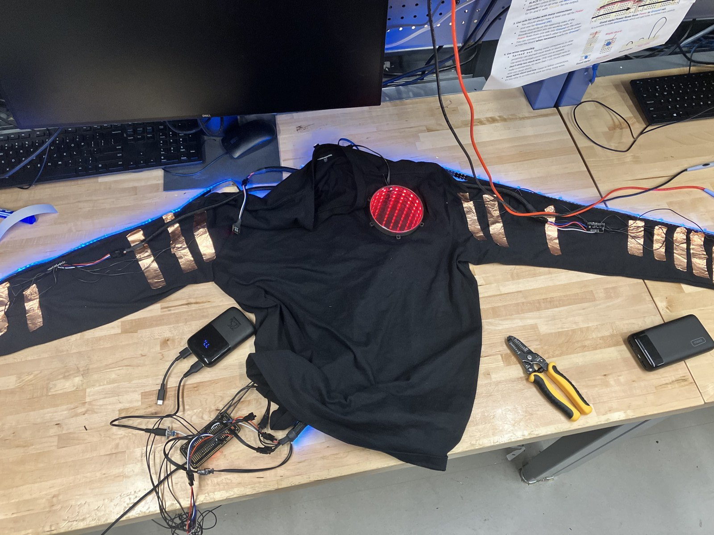

01 / LATEST PROJECT
COMPLETED
Interactive Wearable Costume
Personal Project · 2026
A wearable light show, built from the wiring up. I designed and hand-soldered an ESP32-based costume with addressable LEDs along the arms, legs, and spine, copper touch pads on the sleeves, and a red infinity-mirror chest piece.
Custom firmware connects the sensors, lighting effects, and a browser-based control panel. The interface lets me adjust each section, choose colors and animations, and paint directly onto a live visualization of the costume.
HARDWARE IN ACTION
Touch, movement, and light.
See the sleeves, legs, and mirrored chest piece working on the build.
THE CONTROL WEBSITE
A control panel for the whole costume.
Six lighting sections, individual overrides, Paint and Fade brushes, and one-shot effects in a browser. The interactive demo uses simulated inputs so you can explore the controls.
Open interactive demo ↗
BUILD DETAILS
Under the fabric.
